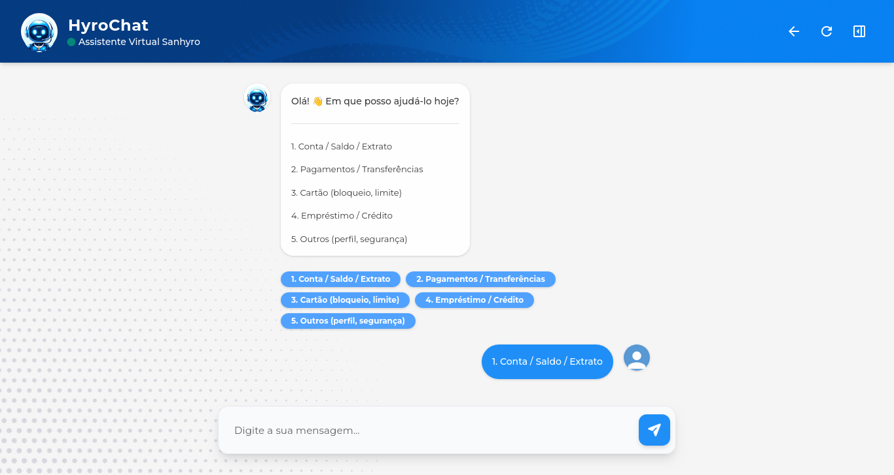
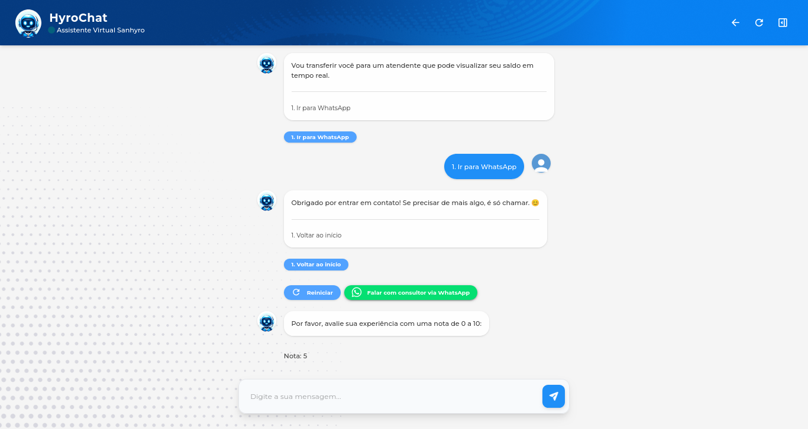

Reported baseline
up to 2 days
response wait reported by the company
The situation described in the project diagnosis during periods of higher demand.
Integrative Project I • UNIVESP • 2026
Guided triage for the fintech Sanhyro. The chatbot organizes common requests and prepares a path to a support agent when the conversation needs to continue on WhatsApp.

I helped shape the triage interface and architecture concept, contributed to the documentation and reviewed the code. Decisions were made as a team; I led and produced the full project presentation.
01 / The problem
Sanhyro handled support through WhatsApp. The project started with a need to sort recurring questions and guide each person to the next step with enough context.
up to 2 days
The situation described in the project diagnosis during periods of higher demand.
up to 5
A small team had to balance routine questions with requests that needed human review.
3 steps
Choose a topic, narrow down the request and decide whether it can be resolved or should reach an agent.
The first two figures describe context reported by Sanhyro. They are a problem baseline, not a measured reduction after the project.
02 / Try it
Select “Loan / Credit”, then “Simulate a loan” to follow the triage path documented in the project's code.
This simulation follows the decision tree used by HyroChat. Each choice leads to a predefined response for that topic.
It runs on this page without connecting to the project's server, database or WhatsApp account. The handoff is shown as a prepared message.
The original decision tree and presentation are in Portuguese. This page translates the same path for English readers.

03 / The technical flow
Conversation content lives in a JSON tree. The engine validates each choice, keeps the path and hands off a case when predefined answers are no longer enough.
Triage follows a decision tree with predefined responses and destinations. The flow preserves context when a conversation moves from self-service to a person.
04 / Building it
Separating the interface, decision rules and storage made it easier to change the conversation and understand which data is recorded at the end.
Application
Python organizes the application; NiceGUI renders the chat and admin interface. The JSON tree keeps messages and choices out of the presentation code.
Operations
The documented deployment uses Docker Compose, PostgreSQL, an Nginx proxy and an Oracle Cloud VPS. The web application and database run as separate services with their own runtime configuration.
Feedback records the score, first topic, optional comment, decision path and timestamp. The report also describes an admin interface for reviewing responses.
05 / Team presentation
The video introduces Sanhyro's context, follows a support choice and shows the flow through the user rating.